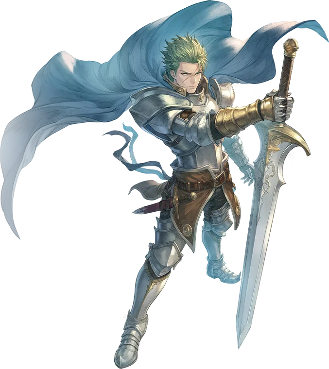

Third tier
Paladin
Paladin is the primary advancement option for the Crusader. It acts as an extension of the Crusader skill tree, expanding their rotations and replacing some of the lower level skills with higher powered ones.
The main character of the Paladin is exemplified in their two new buffs. Castigating Aura provides the user access to Holy property attacks, increases their Hit Rate, and grants offensive and damaging bonuses to all of their other skills. Its counterpart, Providence, does the opposite: it endows the user's Armor with the Holy Element, increases their Perfect Dodge, and grants all of their skills defensive and control based effects. These two buffs do not stack, but have low cooldowns to allow switching between them as the situation demands.
Beyond that, the Paladin skill tree is divided into two branches, much like Crusader before them. The first is focused on Spear skills, making use of Bleeding and Blind to maximize damage output, while the latter is focused on Shield Skills, utilizing the Vulnerable Status to fight at any range.
Unlike most classes, each branch also comes with two "ultimate" skills. The first (Grand Banishment and Hesperus Lit) operates like most of the tree before them, being powerful Spear and Shield based skills respectively that slightly alter their behavior based on whether the user is in Castigating Aura or Providence. The second (Martyr's Reckoning and Gloria Domini) instead leverage the user's HP to do incredible damage to the targeted enemy, providing an excellent burst option outside the standard skill rotation.
Finally, Paladins have access to one more "neutral" skill that slots comfortably into builds of either branch. Sanctify creates a massive area of consecrated ground around the user, granting a boost to Attack, Magic Attack, Defense, and Magic Defense for all allies that stand within it. At the same time, it periodically deals damage to all enemies that linger within the effect for too long.

Skill list
Skills
Skill names and effects are kept in English because that is how they appear in game.
- Castigating Aura
Enchants the user's weapon with the Holy property, increases the user's Hit, and grants all Paladin skills additional effects based on damaging and disabling enemies. Does not stack with Providence.
- Providence
Enchants the user's armor with the Holy Property, increases their Perfect Dodge, and grants all Paladin skills additional effects focused on protecting and sustaining the user.
- Sanctify
Creates an area of consecrated ground that buffs the Atk, Matk, Def, and Mdef of all allies within, while periodically inflicting Holy Property damage on all enemies.
- Banishing Strike
Spear skill. Deals weapon-property physical damage to a single target, dealing additional damage to Demon, Undead, and Angel Race enemies. During Castigating Aura, the bonus damage is applied to all races instead, and the skill inflicts Bleeding. During Providence, the skill heals the user for a portion of the damage dealt, and the skill inflicts Blind.
- Overbrand
Spear Skill. The user whirls their spear around, striking all enemies in the area and attempting to inflict Bleeding and Blind. Enemies already suffering from these statuses take additional damage. During Castigating Aura, the Status Chance is increased. During Providence, the user gains the Endure effect for a short time.
- Grand Banishment
The user calls a massive spear from the heavens to obliterate the target, striking all enemies in the area around them for massive damage and inflicting Holy Weakness. During Castigating Aura, the skill's damage is doubled. During Providence, this skill stuns all enemies struck for two seconds.
- Martyr's Reckoning
The user sacrifices their own HP to deal massive damage to a single target. The base damage of the skill is the same as the user's Weapon property. The HP-based portion of the damage ignores Flee, Defense, and all elemental modifiers. During Castigating Aura, this skill also inflicts Bleeding, Vulnerable, and Blind. During Providence, the HP Based portion of the damage is doubled.
- Rapid Smiting
Shield skill. Hurls the user's shield to strike a distant target multiple times. Damage is increased by the weight of the user's shield, and deals additional damage to Vulnerable enemies. During Castigating Aura, the damage is increased further by the user's Vulnerable Potency. During Providence, the target is briefly immobilized.
- Ray of Judgement
Shield Skill. The user fires a beam of holy light from their shield, dealing Weapon-property Ranged Physical damage. During Castigating Aura, this skill inflicts the Severe Burning status. During Providence, this skill also inflicts the Slow status.
- Hesperus Lit
Shield skill. The user delivers a crushing blow with their shield, empowered by the weight of divine judgement. Deals Weapon-property Melee Physical damage, which is increased if the target is Vulnerable. This skill also inflicts the Vulnerable Status, and deals additional damage based on the user's Vulnerable Potency. During Castigating Aura, this skill is guaranteed to be Critical. During Providence, this skill inflicts the Stun Status for two seconds.
- Gloria Domini
The user calls down the wrath of God on a single target, dealing exceptional damage that ignores Defense and all elemental modifiers. During Castigating Aura, this skill inflicts the Vulnerable, Breach, and Holy Weakness Statuses. During Providence, this skill inflicts additional damage based on the user's Current HP.
Come find out what changed
Make an account now, grab the client, and be there when the servers go up.